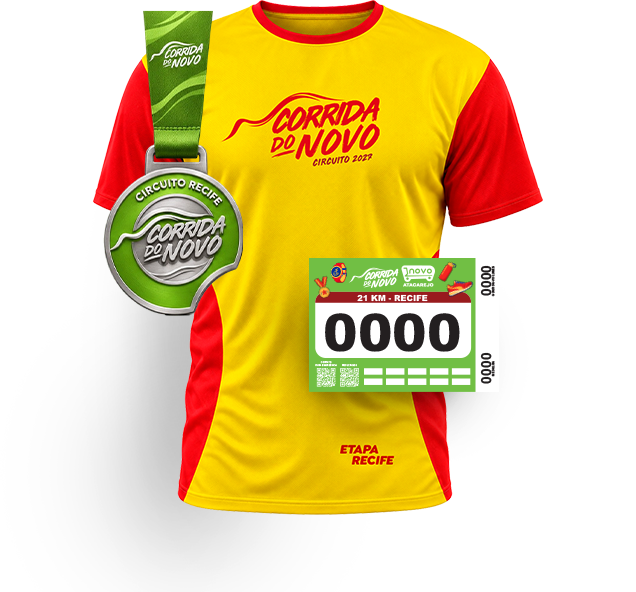

O Circuito Corrida do Novo 2027 leva a energia da corrida de rua para três capitais do Nordeste: Recife, Maceió e João Pessoa.
Em cada etapa, você escolhe entre 5, 10 ou 15 KM e recebe o kit oficial com camisa dry fit, medalha e número de peito com chip.
Um circuito
para o povo
disparar!